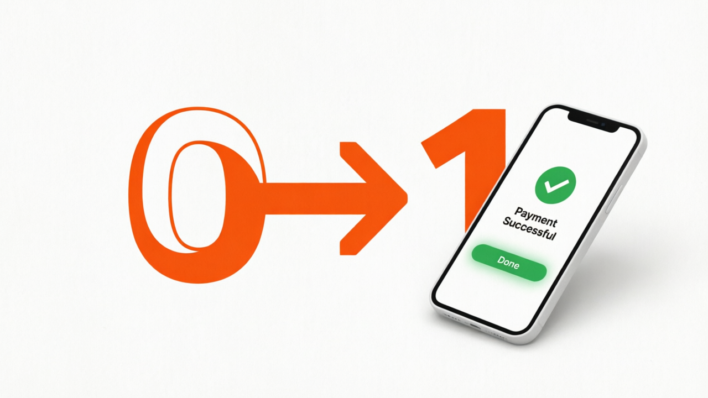

関西学院大学 福祉科 × AI講座 2026
AIって、ChatGPT
だけじゃない。
あなたが知らないAIの世界と、
自分専属AI部下を持つ時代の話

あなたが知らないAIの世界と、
自分専属AI部下を持つ時代の話
AIに詳しい人・反対の人・よくわからない人……
どんな人でも今日は大歓迎！
目的に合ったAIを選ぶことが
これからのリテラシー。
マウス・キーボードを自律的に操作するAIエージェント。メール返信・資料作成・ブラウザ操作を人の代わりに実行。
データ入力・経理事務・翻訳・法律文書の下書き……定型的なホワイトカラー業務から変化が始まっている。
プログラミング・デザイン・営業……
AIがあなたの分身になる。
「こんなアプリが欲しい」と伝えるだけでAIがコードを書いてくれる。プログラミング知識ゼロでOK。
シリコンバレーのスタートアップ4割が一人企業化。AIが営業・開発・デザインを肩代わり。


目的に合ったAIを選ぶ力が
これからのリテラシー。
「いい感じにして」
→ 平均的な出力
目的・読者・トーンを
明確に → 高品質
軍事・監視・フェイクニュース・詐欺……AIは「悪意」も増幅する。
障がい者支援・医療診断・仏教研究……福祉の視点がAIを変える。
今日学んだこと、明日からの行動に。